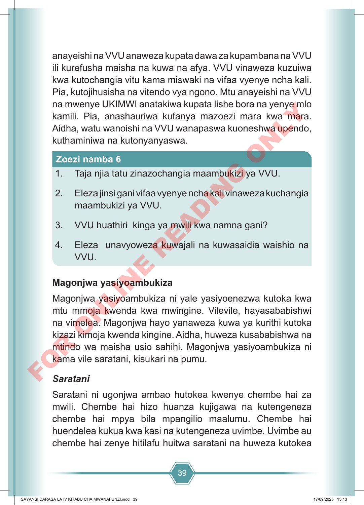

39 anayeishi na VVU anaweza kupata dawa za kupambana na VVU ili kurefusha maisha na kuwa na afya. VVU vinaweza kuzuiwa kwa kutochangia vitu kama miswaki na vifaa vyenye ncha kali. Pia, kutojihusisha na vitendo vya ngono. Mtu anayeishi na VVU na mwenye UKIMWI anatakiwa kupata lishe bora na yenye mlo kamili. Pia, anashauriwa kufanya mazoezi mara kwa mara. Aidha, watu wanoishi na VVU wanapaswa kuoneshwa upendo, kuthaminiwa na kutonyanyaswa. 1. Taja njia tatu zinazochangia maambukizi ya VVU. 2. Eleza jinsi gani vifaa vyenye ncha kali vinaweza kuchangia maambukizi ya VVU. 3. VVU huathiri kinga ya mwili kwa namna gani? 4. Eleza unavyoweza kuwajali na kuwasaidia waishio na VVU. Zoezi namba 6 Magonjwa yasiyoambukiza Magonjwa yasiyoambukiza ni yale yasiyoenezwa kutoka kwa mtu mmoja kwenda kwa mwingine. Vilevile, hayasababishwi na vimelea. Magonjwa hayo yanaweza kuwa ya kurithi kutoka kizazi kimoja kwenda kingine. Aidha, huweza kusababishwa na mtindo wa maisha usio sahihi. Magonjwa yasiyoambukiza ni kama vile saratani, kisukari na pumu. Saratani Saratani ni ugonjwa ambao hutokea kwenye chembe hai za mwili. Chembe hai hizo huanza kujigawa na kutengeneza chembe hai mpya bila mpangilio maalumu. Chembe hai huendelea kukua kwa kasi na kutengeneza uvimbe. Uvimbe au chembe hai zenye hitilafu huitwa saratani na huweza kutokea SAYANSI DARASA LA IV KITABU CHA MWANAFUNZI.indd 39 SAYANSI DARASA LA IV KITABU CHA MWANAFUNZI.indd 39 17/09/2025 13:13 17/09/2025 13:13 F O R O N L I N E R E A D I N G O N L Y